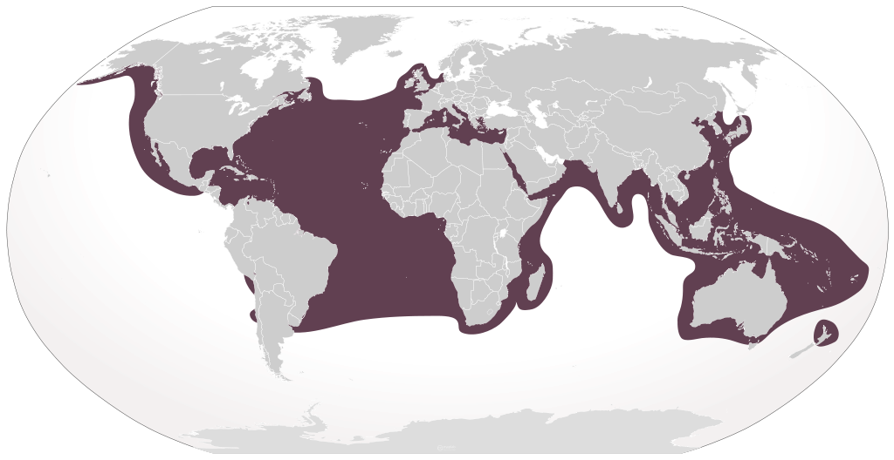
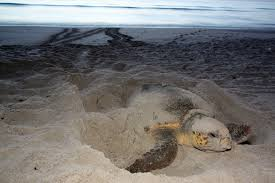
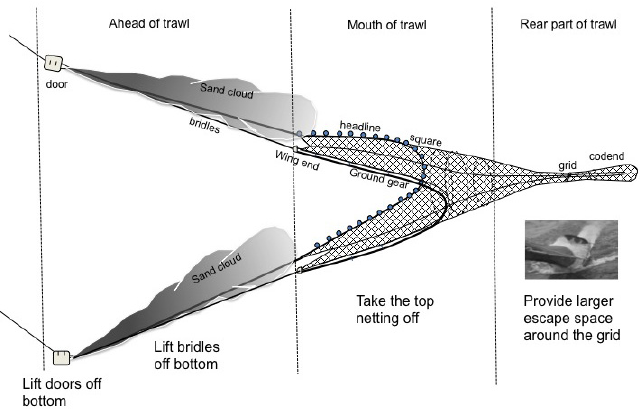
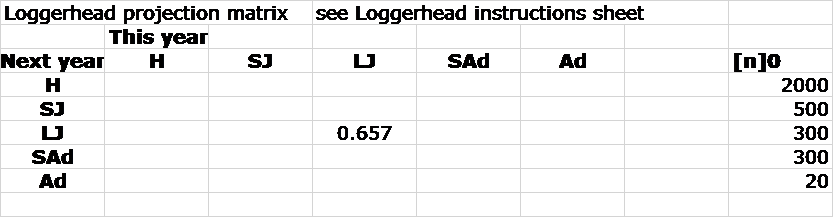
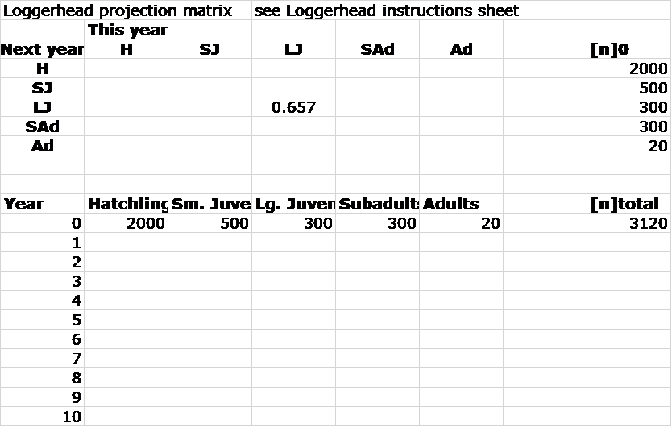
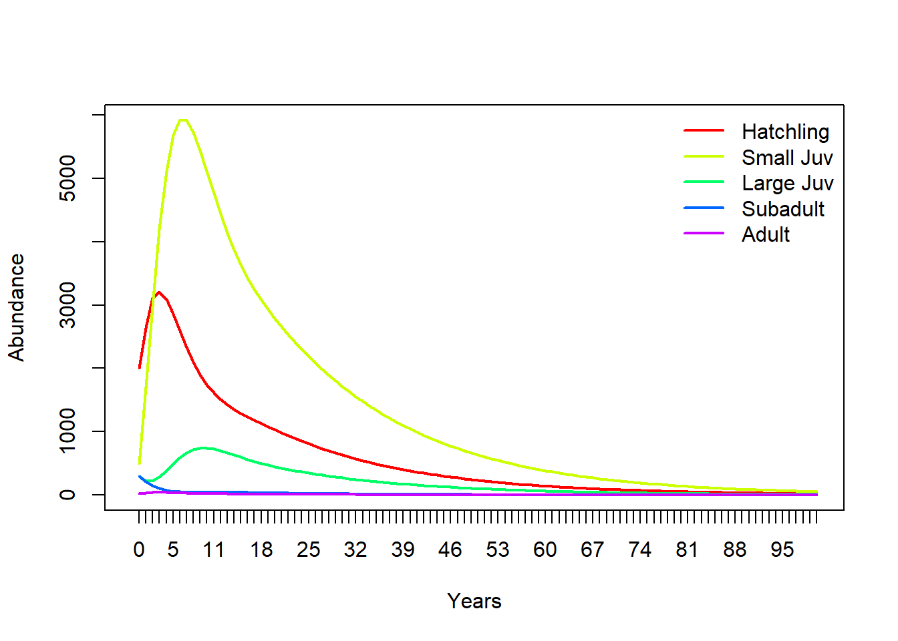

Loggerhead PVA
NRES 421/621
Spring 2022
PVA for loggerhead turtles!
This PVA example, like the grizzly bear example, demonstrates the use of real demographic data in projecting a population into the future. We will use this PVA to do some management-relevant scenario testing. Also try to run through the Excel exercise (see below)!
If you’d like to follow along in R, you can use this script
Constructing a demographic (matrix) model data for loggerhead turtles
If you would like more background information on loggerhead turtles, visit these websites:
USFWS site
NMFS site
Texas site
Background
The loggerhead sea turtle, C. caretta, is a large marine turtle with a nearly global distribution. Nesting areas in the USA occur along the Atlantic coast from New Jersey to Texas, although individuals may be observed along the Pacific coast and in Hawaii.

The species has been federally listed as ‘threatened’ since 1978. When a species is listed, the Endangered Species Act (ESA) requires that a recovery plan be drafted whose goal is to eventually remove the species from the list.
Loggerheads are listed as “Threatened” under the IUCN Red List.

Threats
Biologists have identified two key types of threats facing loggerheads: alteration of nesting beaches and bycatch from commercial fisheries.
- Threats to nesting beaches

Adult females lay their eggs (ca. three nests every 2-3 years, up to 190 eggs/nest) on sandy beaches between April and September. Eggs incubate under the sand for about 2 months, and juveniles make a mad dash for the water upon hatching.
Because beaches are popular sites for human recreation and development, arriving female turtles and hatchlings face risks including
- poaching (eggs or adults)
- beach erosion or beach fortification to prevent erosion
- artificial lighting
- recreational vehicles
- … and many others.
- Incidental mortality due to marine fisheries
Once hatchlings reach the ocean, they face different threats as they slowly develop to maturity.
- After the sargassum-feeding stage, loggerhead turtle juveniles, subadults and adults feed in coastal seagrass mats which are also frequented by shrimp boats and other inshore trawling vessels. Hence accidental capture (“bycatch”) and subsequent drowning in the nets and traps used by these vessels is common- especially for juveniles!

- In addition to these primary threats, sea-going juveniles and adults face mortality due to bycatch in longline, hook-and-line, and trap fisheries targeting tuna and other species.
- Additional threats
During cold temperatures turtles may go dormant, burying themselves in muddy bays and estuaries. While dormant they can be killed by periodic dredging to maintain bays and waterways.
Human-produced debris (styrofoam peanuts, plastic bags, tar balls, and balloons) may cause entanglement, stranding, and drowning.
Shallow swimming turtles may also collide with boat propellers.
Toxins (pesticides and heavy metals) and oil spills may harm turtle physiology and decrease fecundity, but their impact has not been quantified.
Finally, although rare in the US, illegal harvest of eggs as well as subadults and adults for meat, may occur frequently in the coastal Caribbean (Panama, Honduras). Turtle eggs are occasionally seen in open-air markets in Panama.
Step 1: a size-structured model
The loggerhead is a long-lived species – sexual maturity often doesn’t occur until animals are almost 30 years of age! The life cycle of the loggerhead is best described by distinct stage classes defined by body size (carapace length).
Once turtle life-stages with similar vital rates have been identified, three pieces of data (collectively called transition rates) must be collected to construct the stage-structured model:
- fraction of turtles surviving each year but not advancing to the next larger size-class (often just called ‘survival’);
- fraction of turtles surviving each year and advancing to the next larger size-class (often called ‘growth’); and
- average number of hatchlings successfully produced by females of each size-class per year, discounted by the probability of surviving each year (often called ‘fecundity’).
Step 2: parameterize the model
Transition rates for turtles and other species are often estimated on the basis of capture-mark-recapture (CMR) data.
Here are some relevant parameters, from this paper:
Transition from stage 1-2 (hatchling to small juvenile): 0.675
Transition from stage 2-3 (small to large juvenile): 0.047
Transition from stage 3-4 (large juvenile to subadult): 0.019
Transition from stage 4-5 (subadult to adult): 0.061
Transition from stage 2-2 (stay small juvenile): 0.703
Transition from stage 3-3 (stay large juvenile): 0.657
Transition from stage 4-4 (stay subadult): 0.682
Transition from stage 5-5 (stay adult): 0.809
Transition from stage 4-1 (reproduction by subadults): 4.67
Transition from stage 5-1 (reproduction by adults): 61.90
For this model we will assume no stochasticity or uncertainty in any of these parameters.
Step 3: simulate!
We can project the loggerhead population into the future using matrix multiplication!
We can do this using any number of tools- including R, Excel, or Insightmaker.
See the end of this lecture for a review of matrix population models and how they work.
Build the baseline loggerhead projection matrix
- In Excel, your projection matrix would look something like this:

In R, your projection matrix would look like this!
##### specify projection matrix!
projection_matrix <- matrix(
c(
0, 0, 0, 4.665, 61.896,
0.675, 0.703, 0, 0, 0,
0, 0.047, 0.657, 0, 0,
0, 0, 0.019, 0.682, 0,
0, 0, 0, 0.061, 0.809
)
,nrow=5,ncol=5,byrow=T
)
stagenames <- c("Hatchling","Small Juv","Large Juv","Subadult","Adult")
rownames(projection_matrix) <- stagenames
colnames(projection_matrix) <- stagenames
projection_matrix## Hatchling Small Juv Large Juv Subadult Adult
## Hatchling 0.000 0.000 0.000 4.665 61.896
## Small Juv 0.675 0.703 0.000 0.000 0.000
## Large Juv 0.000 0.047 0.657 0.000 0.000
## Subadult 0.000 0.000 0.019 0.682 0.000
## Adult 0.000 0.000 0.000 0.061 0.809But we will use InsightMaker for this PVA:
Projecting the loggerhead population in InsightMaker
First, clone the baseline loggerhead PVA model here.
Hit “Simulate”. Your results should look similar to this (which was done in R):
# Run the matrix projection model!
nYears <- 100 # set the number of years to project
TMat <- projection_matrix # define the projection matrix
Abundance_year0 <- c(2000,500,300,300,20) # vector of initial abundances
InitAbund <- Abundance_year0 # define the initial abundance
## NOTE: the code below can be re-used without modification:
allYears <- matrix(0,nrow=nrow(TMat),ncol=nYears+1) # build a storage array for all abundances!
allYears[,1] <- InitAbund # set the year 0 abundance
for(t in 2:(nYears+1)){ # loop through all years
allYears[,t] <- TMat %*% allYears[,t-1]
}
plot(1,1,pch="",ylim=c(0,max(allYears)),xlim=c(0,nYears+1),xlab="Years",ylab="Abundance",xaxt="n") # set up blank plot
cols <- rainbow(5) # set up colors to use
for(s in 1:5){
points(allYears[s,],col=cols[s],type="l",lwd=2) # plot out each life stage abundance, one at a time
}
axis(1,at=seq(1,nYears+1),labels = seq(0,nYears)) # label the axis
legend("topright",col=cols,lwd=rep(2,3),legend=rownames(TMat),bty="n") # put a legend on the plotNOTE: here we use the term “survival” to refer to surviving and staying in the same stage class, and “growth” to refer to surviving and moving on to the next life stage.
Look over the model, and make sure that you understand the inner workings!
Group exercise (in class!): loggerhead management
Working in small groups if possible, investigate four management scenarios for the loggerhead turtle population:
- Improve fecundity (labeled “Sub Fecundity” and “Adult Fecundity” in the IM model) via nest-site protection!
- Improve fecundity to 1.5X the current value
- Double fecundity (2X the current value)
- Improve fecundity to 1.5X the current value
- Improve hatchling survival (labeled “hatchling growth” in the IM model) via nest monitoring
- Improve to 90%
- Improve to 100%
- Improve to 90%
- Improve large juvenile survival (labeled “Lg Juv Surv” in the IM model) using Turtle Excluder Devices (TEDs)
- Add 0.15 to the existing large juvenile survival
- Add 0.25 to the existing large juvenile survival
- Add 0.15 to the existing large juvenile survival
- Improve adult/subadult survival (labeled “Sub Surv” and “Adult Surv” in IM) by restricting longline fisheries.
- Increase by 5% (add 0.05 to the existing subadult and adult survival)
- Increase by 10% (add 0.1 to the existing subadult and adult survival)
- Increase by 5% (add 0.05 to the existing subadult and adult survival)

turtle excluder device
For each scenario, consider:
- The short-term outlook (4-6 years out)
- The long-term outlook (100 years out)
Please write down your responses to the following questions::
Short Answer Question #1: What is your management recommendation for this population? Why? [please take your time with this one]
Short Answer Question #2: In the base model, why does the population always seem to grow during the first few years of the simulation, even if the population ultimately declines over time?
References
Mills, L. S., S. G. Hayes, C. Baldwin, M. J. Wisdom, J. Michael, J. Citta, D. J. Mattson, and K. Murphy. 1996. Factors Leading to Different Viability Predictions for a Grizzly Bear Data Set. Conservation Biology 10 (3), 863-873. doi: 10.1046/j.1523-1739.1996.10030863.x
Morris, W. F. and D. F. Doak. 2002. Quantitative conservation biology: Theory and practice of population viability analysis. Sinauer, Sunderland, MA.
Morris, W. F., D. F. Doak, M. Groom, P. Kareiva, J Fieberg, L. Gerber, P. Murphy, D. Thomson. 1999. A practical handbook for population viability analysis. The Nature Conservancy, Wash., DC.
Optional: Forecast the population into the future in Excel
Since you probably are most familiar with Excel, let’s do it in Excel first! Or if you’d like to do it in R instead, I’ve provided some code to get you started! You can download the R code here
Population projection in Excel
You can load the base Excel model here
Note that the transition rates are already provided for you in the spreadsheet – in the form of a transition matrix!
NOTE: Wherever a transition is not possible, e.g., from hatchlings to large juveniles, you will see a zero in the transition matrix.
The projection matrix can be used to project future loggerhead population size assuming the transition probabilities (the \(F_i\), \(S_i\), and \(G_i\)) do not change over time.
Let’s use the following initial densities in our model!
- 2000 size-class 1 (Hatchlings)
- 500 size-class 2 (Sm. juveniles)
- 300 size-class 3 (Lg. juveniles)
- 300 size-class 4 (Subadults)
- 20 size-class 5 (Adults)
Here’s how it looks in R:
Abundance_year0 <- c(2000,500,300,300,20) # vector of initial abundances
Abundance_year0## [1] 2000 500 300 300 20So your EXCEL file should look something like the one below:

Using the ‘size-distribution vector’, we can project the population size of each size-class next year using the matrix formula: \(\mathbf{N}_{t+1} = \mathbf{A} \cdot \mathbf{N}_{t}\). (remember to see below for a refresher of matrix multiplication).
This formula calculates the size distribution next year (i.e., in year t + 1) based on the projection matrix \(\mathbf{A}\) and the size distribution this year \(\mathbf{N}_{t}\).
For example, to calculate the first row of [n]t+1, the number of hatchlings:
hatchlings in year 1 = 2000x0 + 500x0 + 300x0 + 300x4.665 + 20x61.896 = 2637.42
We systematically multiply each entry of the first row of the transition matrix [A] by the entries in column [n]0 and sum up these values. The first entry in row 1 is multiplied by the first entry of the column vector. The second entry of row 1 is multiplied by the second entry of the column vector, and so forth, until all 5 entries of row 1 have been accounted for. Let’s do this together!
Q: Using actual numbers as for hatchlings above, write out the equation for calculating the number of small juveniles (sm juv) in year 1 based on \(\mathbf{A}\) and \(\mathbf{N}_{0}\):
Number of small juveniles in year 1 =
Now we can enter formulas in Excel to calculate the stage distribution vector for year 1.
For example, our formula for computing the number of hatchlings in year 1 might look something like this:
= B$4*B12 + C$4*C12 + D$4*D12 + E$4*E12 + F$4*F12
And the projected number of small juveniles (SJ) in year 1 might look like this:
= B$5*B12 + C$5*C12 + D$5*D12 + E$5*E12 + F$5*F12Q: What is the formula for the projected number of large juveniles in year 1?
Finally, create an additional formula in cells H12-H13 which calculates the total population size in a year (the sum of all size-classes):
In Excel, this will look something like this:
=SUM(B12:F12)You should note two things about the formulas:
The references to the rows of the [A] matrix should be absolute, i.e., have a ‘$’ in front of the row number. This is because when we drag these formulas down, we want them to continue to refer to the correct row of the [A] matrix.
The references to the size distribution vector should not be absolute (should not contain the ‘$’).
Q: Why? (Hint: what are we going to do with this model?)
ADDITIONAL NOTE: If your data are in different columns and rows than described above, you will not be able to copy the above formulas exactly, as they will not be referring to the proper cells in your file. So make sure your formulas are correct for your particular EXCEL file.
Q: Use your [A] matrix and skills in EXCEL to project the loggerhead population 100 years in the future. This will require dragging formulas down. This is equivalent to iterating (i.e., repeating) the matrix multiplication process 100 times.
Your results should look similar to this (which was done in R):
# Run the matrix projection model!
nYears <- 100 # set the number of years to project
TMat <- projection_matrix # define the projection matrix
InitAbund <- Abundance_year0 # define the initial abundance
## NOTE: the code below can be re-used without modification:
allYears <- matrix(0,nrow=nrow(TMat),ncol=nYears+1) # build a storage array for all abundances!
allYears[,1] <- InitAbund # set the year 0 abundance
for(t in 2:(nYears+1)){ # loop through all years
allYears[,t] <- TMat %*% allYears[,t-1]
}
plot(1,1,pch="",ylim=c(0,max(allYears)),xlim=c(0,nYears+1),xlab="Years",ylab="Abundance",xaxt="n") # set up blank plot
cols <- rainbow(5) # set up colors to use
for(s in 1:5){
points(allYears[s,],col=cols[s],type="l",lwd=2) # plot out each life stage abundance, one at a time
}
axis(1,at=seq(1,nYears+1),labels = seq(0,nYears)) # label the axis
legend("topright",col=cols,lwd=rep(2,3),legend=rownames(TMat),bty="n") # put a legend on the plot
Q: Is this model deterministic or stochastic?
REVIEW: matrix population models:
We can present yearly fecundity and survival probabilities compactly in a projection matrix [A] which we use to project the population size year to year.
We all remember the finite-population-growth equation:
\(N_{t+1}=\lambda \cdot N_t \qquad \text{(Eq. 1)}\),
where \(N\) is abundance (as always), \(t\) is time, often in years but could be any time units, and \(\lambda\) is the multipicative growth rate over the time period \(t \rightarrow t+1\)
The matrix population growth equation looks pretty much the same!
\(\mathbf{N}_{t+1} = \mathbf{A} \cdot \mathbf{N}_{t} \qquad \text{(Eq. 2)}\),
where \(\mathbf{N}\) is a vector of abundances (abundance for all stages), and \(\mathbf{A}\) is the transition matrix, which we have seen before.
We can be more explicit about this if we re-write the above equation this way:
\(\begin{bmatrix}N_1\\ N_2\\N_3 \end{bmatrix}_{t+1}=\begin{bmatrix}0 & F_2 & F_3\\ P_{1 \rightarrow 2} & P_{2 \rightarrow 2} & 0\\ 0 & P_{2 \rightarrow 3} & P_{3 \rightarrow 3}\end{bmatrix} \cdot \begin{bmatrix}N_1\\ N_2\\N_3 \end{bmatrix}_{t} \qquad \text{(Eq. 3)}\)
Where \(P_{1 \rightarrow 2}\) is the probability of advancing from stage 1 to 2, and \(F_2\) is the fecundity of stage 2.
There are three important types of transitions.
- \(F_i\) = Fecundities, or the number of new turtles (hatchlings) produced by an average individual of size-class i per year. This is the top row of the transition matrix.
- \(S_i\) = Stage Survival, or fraction of size i turtles surviving and staying in the same size-class per year. These are the diagonal elements of the matrix
- \(G_i\) = fraction of size i turtles surviving and growing to size-class i + 1 per year. These are the subdiagonal elements of the matrix.
NOTE: fecundity is NOT the same thing as birth rate, \(b\). What’s the difference?
Birth rate, \(b_t\), is the per-capita rate of offspring production for stage \(t\)
Fecundity, \(F_t\), is the _per-capita rate by which an individual of stage \(t\) contributes new offspring to the population at time \(t+1\). Sounds pretty similar, right? What’s the difference??
Fecundity also takes into account the survival rate from \(t\) to \(t+1\)!! For an adult of stage \(t\) to contribute to the next generation, it must both survive and reproduce!.
\(F_t = P_{1 \rightarrow 2} \cdot b_{t+1} \qquad \text{(Eq. 4)}\)
There is a lot we can do with matrix population models. The most obvious one is projection:
Projection:
We have already seen the projection equation (Eq. 2, above). Here is how we can implement this in R:
Year1 <- projection_matrix %*% Abundance_year0 # matrix multiplication!Let’s try it!:
First, let’s build a projection matrix:
projection_matrix <- matrix(
c(
0, 1.2, 3.1,
0.4, 0, 0,
0, 0.75, 0
)
,nrow=3,ncol=3,byrow=T
)
projection_matrix## [,1] [,2] [,3]
## [1,] 0.0 1.20 3.1
## [2,] 0.4 0.00 0.0
## [3,] 0.0 0.75 0.0Next, let’s build an initial abundance vector:
Abundance_year0 <- c(1000,0,0)
Abundance_year0## [1] 1000 0 0Now we can run the code for real!
Year1 <- projection_matrix %*% Abundance_year0 # matrix multiplication!
Year1## [,1]
## [1,] 0
## [2,] 400
## [3,] 0Now we have 300 individuals in stage 2!
Let’s project one more year:
Year2 <- projection_matrix %*% Year1 # matrix multiplication!
Year2## [,1]
## [1,] 480
## [2,] 0
## [3,] 300Here is some R code to project many years into the future!
nYears <- 20 # set the number of years to project
TMat <- projection_matrix # define the projection matrix
InitAbund <- Abundance_year0 # define the initial abundance
## NOTE: the code below can be re-used without modification:
allYears <- matrix(0,nrow=nrow(TMat),ncol=nYears+1) # build a storage array for all abundances!
allYears[,1] <- InitAbund # set the year 0 abundance
for(t in 2:(nYears+1)){ # loop through all years
allYears[,t] <- TMat %*% allYears[,t-1]
}
plot(1,1,pch="",ylim=c(0,max(allYears)),xlim=c(0,nYears+1),xlab="Years",ylab="Abundance",xaxt="n") # set up blank plot
cols <- rainbow(3) # set up colors to use
for(s in 1:3){
points(allYears[s,],col=cols[s],type="l",lwd=2) # plot out each life stage abundance, one at a time
}
axis(1,at=seq(1,nYears+1),labels = seq(0,nYears)) # label the axis
legend("topleft",col=cols,lwd=rep(2,3),legend=paste("Stage ",seq(1:nrow(TMat)))) # put a legend on the plot